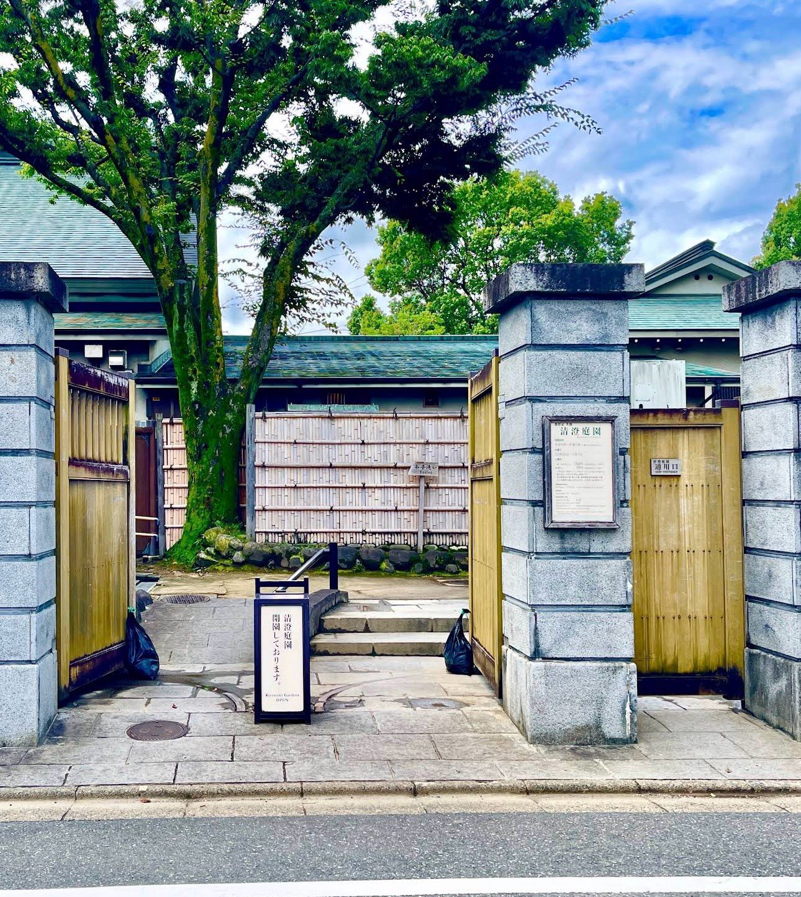
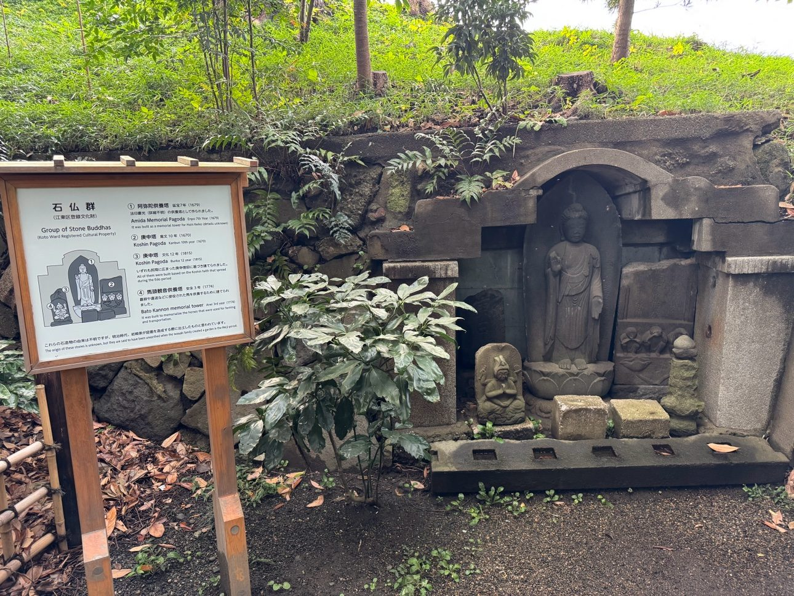
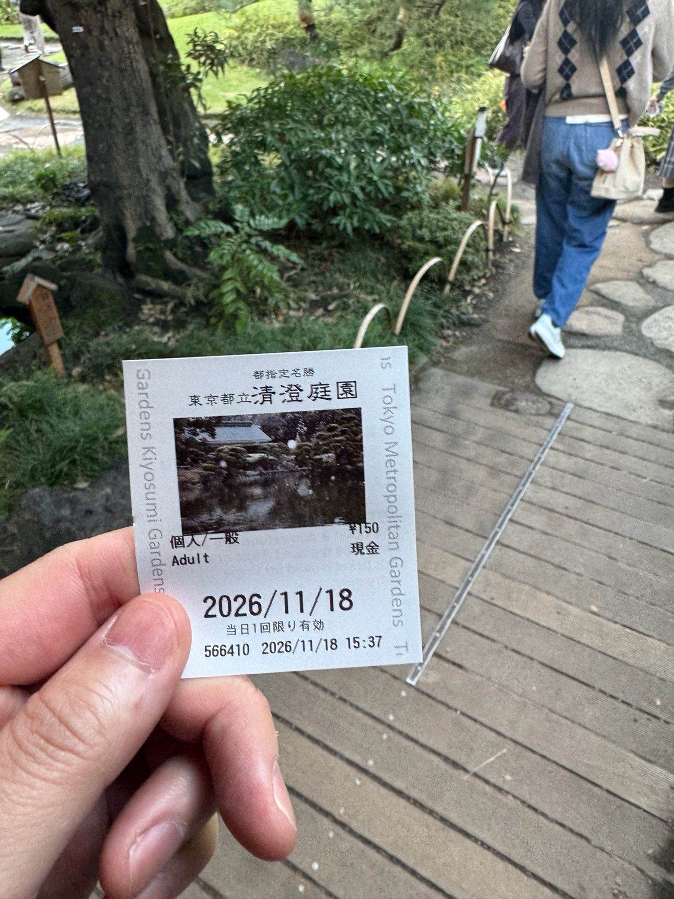
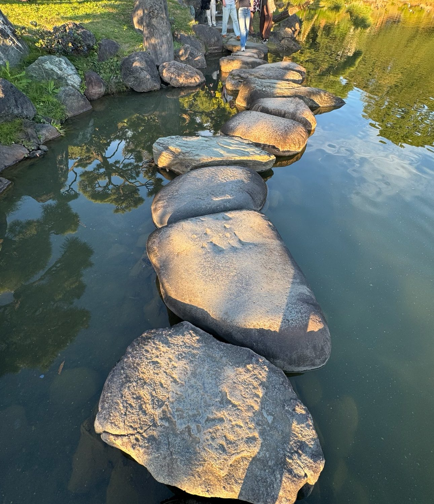
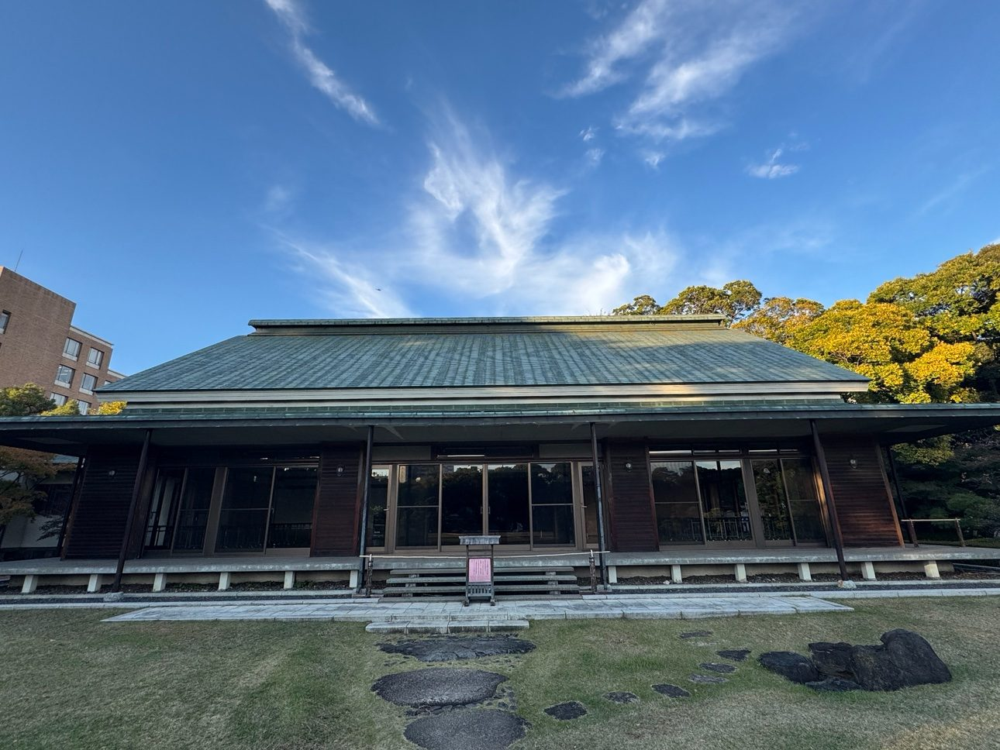
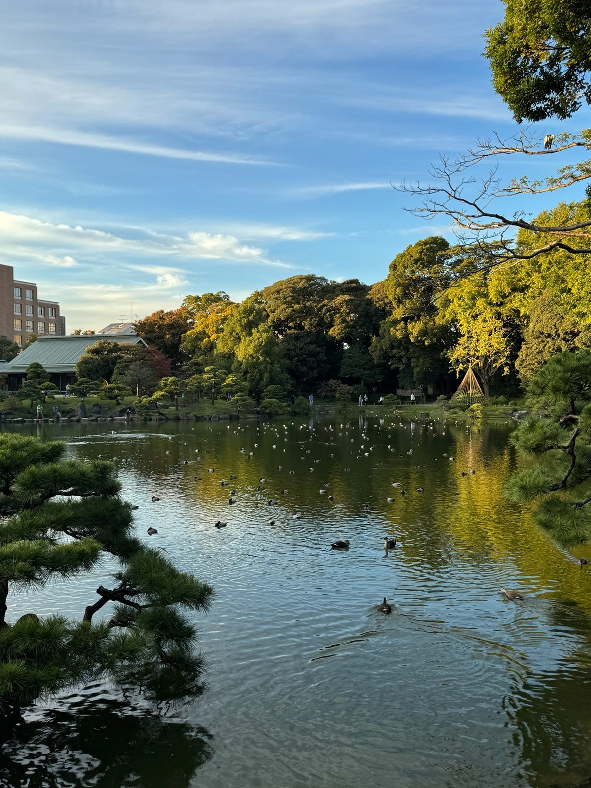
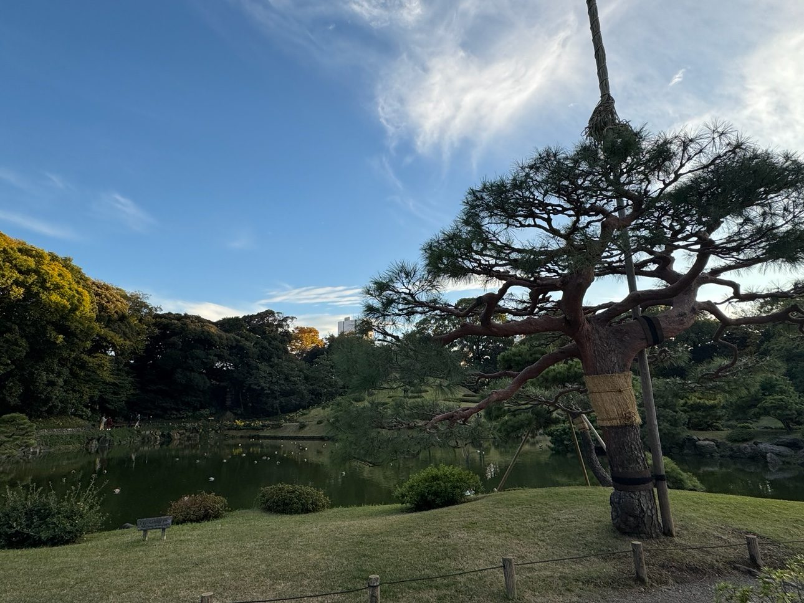

Kiyosumi Gardens in Kiyosumi-Shirakawa: Fees, Hours and a Straight Review from an Akihabara Tour Guide
ACCESS
3 min from Kiyosumi-shirakawa
ENTRY
¥150 entry
HOURS
9:00–17:00
PAYMENT
Cards, IC & QR OK
Guide · Akihabara
I walked here on the afternoon of 18 November 2026, bought a ¥150 ticket at 15:37 and photographed the pond, the stepping stones and the notice boards. The history and prices below are from the garden's official page and the boards inside the gate.
Yes — if you are anywhere near Kiyosumi-Shirakawa, this is the easiest ¥150 you will spend in Tokyo. Kiyosumi Gardens is a Meiji-era stroll garden built around a large pond by the founder of Mitsubishi, three minutes from the station, and quiet in a way central Tokyo rarely manages. I run anime tours in Akihabara; I live in Kōtō City, and this is where I go to slow down.

What is Kiyosumi Gardens?
A kaiyu-style (circuit) stroll garden in Koto City, east of the Sumida River: a big pond with three islands, artificial hills, a dry-garden corner, and more than fifty celebrated stones that the Iwasaki family — the founders of Mitsubishi — had shipped in from quarries all over Japan on the company's own steamers.
The ground is older than the garden. Local tradition says the Edo-period merchant Kinokuniya Bunzaemon had a mansion here, and in the Kyoho era (1716–1736) it became the secondary residence of the lord of Seki-yado. Iwasaki Yataro bought the site — some 30,000 tsubo — in 1878 and built the garden as a place to rest his employees and entertain guests; it opened in 1880 as Fukagawa Shinboku-en. The pond originally drew water from the Sumida River and rose and fell with the tide. Today it is rainwater, and the reflections do the work instead.
The garden also has a disaster history Tokyo does not forget. After the 1923 Great Kanto Earthquake it served as an evacuation ground and saved many lives; the Iwasaki family responded by donating the less-damaged eastern half to Tokyo City in 1924. It opened as a public park on 24 July 1932, the western open park was added in 1977, and in 1979 the garden was designated a Tokyo Metropolitan Place of Scenic Beauty. Tucked into the trees on the west shore is a group of stone Buddhas — Edo-period memorial stones, now a Koto Ward registered cultural property, said to have been unearthed while the Iwasaki were building the garden.

How much does it cost to get in?
¥150 for an adult — that is what my ticket cost on 18 November 2026, and the photograph below is the ticket itself. It is ¥70 if you are 65 or over, and free for children of elementary-school age and under, and for junior-high students who live or study in Tokyo. Groups of twenty or more pay ¥120 (¥50 for 65+).
If you think you will come back, the garden's own annual passport is ¥600, and a passport covering all nine metropolitan gardens is ¥4,000. Entry is free for everyone on Greenery Day (4 May) and Tokyo Citizens' Day (1 October). I paid cash, but the official page lists credit cards, transport IC, e-money and QR payments as accepted — no cash-only trap here.

What is there to see?
The pond — Dai-Sensui — and the stones you cross it on. The iso-watari are flat-topped boulders set in the shallows so you can walk out over the water, and they are placed so the view changes with every step: islands, pines and the Ryotei pavilion sliding past each other as you go. Watch your footing and keep moving. The stones are the garden's signature for a reason.
The named stones are the other half of the show. The Iwasaki collected them the way other families collected paintings: blue stones from Izu and Kishu, Ikoma stone, a red Sado akadama boulder near the south shore, and dozens more worked into bridges, banks and the dry stream bed of the Karesansui corner. The tallest mound, Fujisan, is planted to read as Mount Fuji; before the 1923 earthquake its upper slopes were kept bare of trees and banded with azaleas, to suggest clouds trailing across the peak. Near the open square stands a stone carved with Basho's most famous haiku — the old pond, a frog, the sound of water — which is a fair summary of the whole garden.

What is the Ryotei?
The sukiya-style pavilion standing out over the pond on the north shore — the building that makes the garden look like a woodblock print. The Iwasaki built it in 1909 to welcome Field Marshal Kitchener, who was visiting Japan as a state guest, and it is the one building here that came through both the 1923 earthquake and the wartime bombing. It was fully renovated in 1985 and named a Tokyo Selected Historic Building in 2005.
Day to day the Ryotei is a rental hall, so you admire it from the shore rather than wander in. The exception is the seasonal teahouse: as Kiyosumi Chaya it opens to everyone, serving matcha with seasonal sweets, and the autumn run is 21 November to 6 December 2026. I visited on the 18th — three days too early — so the tea itself is the one thing in this article I cannot review. The other hall, the Taisho Kinenkan near the gate, has a strange history of its own: it was rebuilt in 1953 using materials from the funeral hall of the Empress Teimei, on the site of a hall first moved here from Emperor Taisho's funeral.

What lives on the pond?
Ducks, mostly — dozens of them, with spot-billed ducks year-round and the winter visitors arriving through November: tufted ducks, pochards and pintails, plus grey herons and cormorants that fish the pond like they own it. On my visit a grey heron was sitting out the afternoon on a bare branch above the water, ignoring everyone.
One rule, posted at the gate and by the pond: do not feed them. The sign explains that the ducks, turtles, softshell turtles and carp can find their own food, and that feeding has caused accidents — people leaning too far and falling in. Watch, photograph, and let the heron do the fishing.

When should you go?
Late afternoon, if you can. I went in at 15:37 and the low sun did half the photography for me: the pines lit up, the apartment blocks across the water turned into reflections, and the yukitsuri — the rope cones that protect the pine branches from snow — were already up for winter. The garden closes at 17:00 sharp, so a late entry is a focused visit, not a lazy one.
By season: the autumn colour here is haze trees, ginkgo and maple, and it runs late — on 18 November it had only just started, and the weather service had the garden still green on the 17th, with the peak expected from late November into early December. The metropolitan gardens' autumn-leaves stamp rally runs until 6 December 2026. The iris field by the open square peaks from late May into mid-June, and there are free volunteer guide tours on Saturdays, Sundays and holidays at 11:00 and 14:00, except in July and August.

What's the catch?
The clock, mainly. Last entry is 16:30 and the garden closes at 17:00 — my 15:37 arrival left 83 minutes, enough for the full circuit with a camera, but not for sitting still. And there is no re-entry: the sign at the gate says so, and the ticket is valid for one entry on one day. Plan the visit as a single loop.
The rest is garden discipline, all of it posted in four languages at the gate. Keep off the grass. Do not feed the pond animals. No pets (service dogs excepted), and no smoking anywhere inside. The iso-watari stones are uneven by design — wear shoes you can balance in. Families should know that the step-free route marked on the garden's own map covers the eastern half of the garden; the western shore has steps and stone paths, and there is stroller parking by the ticket booth if you would rather leave the wheels and walk the rest.
Where exactly is it?
3-3-9 Kiyosumi, Koto-ku, Tokyo 135-0024 — three minutes on foot from exit A3 of Kiyosumi-shirakawa Station, which is served by both the Ōedo and Hanzōmon lines, so it connects easily with Asakusa, Nihonbashi and the Shinjuku side of the city. There is no car park. Come by train.
Only as part of an east-side day — and then it is the best-value stop on it. Kiyosumi Gardens is not near Akihabara and this article will not pretend otherwise: it belongs in a day built around the Museum of Contemporary Art Tokyo, the Fukagawa Edo Museum, or lunch in Fukagawa itself.
That lunch, if you want my pick, is Fukagawa-tei, the little teppan counter in Miyoshi whose Jūjū-yaki lunch is ¥1,200 — I ate there on the same day I photographed this garden, and the two pair naturally: an iron-plate lunch, then a slow circuit of the pond to walk it off. If you are based in Akihabara and only have an hour, stay in Akihabara. If you have an afternoon east of the river, spend ¥150 of it here.
Kiyosumi-shirakawa A3 (Ōedo / Hanzōmon lines), 3 min
Size
81,091㎡ in total; the garden itself 37,434㎡
Payment
Cash, cards, transport IC, e-money, QR
Pets
Not allowed (service dogs excepted)
Re-entry
Not allowed
English
English maps, signs and bird panels in the garden
Free extras
Volunteer guide tours Sat, Sun & holidays 11:00 and 14:00 (not Jul–Aug)
Frequently asked questions
Q
How much is entry to Kiyosumi Gardens?
¥150 for an adult. It is ¥70 if you are 65 or over, and free for children of elementary-school age and under and for junior-high students who live or study in Tokyo. Groups of 20 or more pay ¥120 (¥50 for 65+), and entry is free for everyone on 4 May and 1 October.
Q
When is Kiyosumi Gardens open?
9:00–17:00, with last entry at 16:30. It is closed only for the New Year period, 29 December to 1 January. There is no re-entry once you leave.
Q
How do I get to Kiyosumi Gardens?
Three minutes on foot from exit A3 of Kiyosumi-shirakawa Station on the Ōedo and Hanzōmon lines. The address is 3-3-9 Kiyosumi, Koto-ku. There is no car park.
Q
How long do you need at Kiyosumi Gardens?
About an hour for the full circuit at a photographer's pace. I entered at 15:37 and completed the loop, the islands and the stone Buddhas before the 17:00 close. Add time in iris season, or if you catch the teahouse.
Q
Can you feed the ducks at Kiyosumi Gardens?
NOFeeding the pond animals is prohibited — the garden's signs explain that the ducks, turtles and carp can find their own food, and that feeding has led to people falling in. Watch and photograph instead.
Q
Is Kiyosumi Gardens manageable with a stroller or wheelchair?
Partly. The step-free route on the garden's own map covers the eastern half of the garden; the western shore has steps and stepping-stone paths. Strollers can be left at the parking space by the ticket booth.
Sources and honesty note
Entry prices, hours, closing days, the payment list, the guide-tour times and the garden's history are from the Tokyo Metropolitan Park Association's official page for Kiyosumi Gardens, cross-checked against the ticket I bought (¥150, 15:37, 18 November 2026) and the bilingual history board inside the garden, which I photographed. The stone Buddhas' background is from the garden's own sign beside them. The teahouse dates (21 November – 6 December 2026) are from Walkerplus's listing for the garden and the poster on the garden's notice board, and the Ryotei's official unavailable-for-rental dates cover the same span. I visited three days before the teahouse opened, so nothing here reviews the tea or the sweets. The autumn-colour status is from the Japan Weather Association's garden report of 17 November 2026 and from what my own camera saw the next day.
Two things I could not check and have left out: walking times from Morishita Station (the official page lists only Kiyosumi-shirakawa), and the inside of the Ryotei, which is a rental hall — I photographed it from the garden side only.
No affiliate links. I paid my own ¥150.
About the author. I am Yuuki, an anime tour guide based in Akihabara. I run private anime tours in English most weeks, and I have watched over 1,500 anime series, which is either a qualification or a warning depending on your point of view.
A private half-day with a local otaku guide, planned around your fandom. Three to four hours in English, never mixed with other travelers, rated 4.96 by 171 Airbnb guests. Booking here goes straight into my calendar.